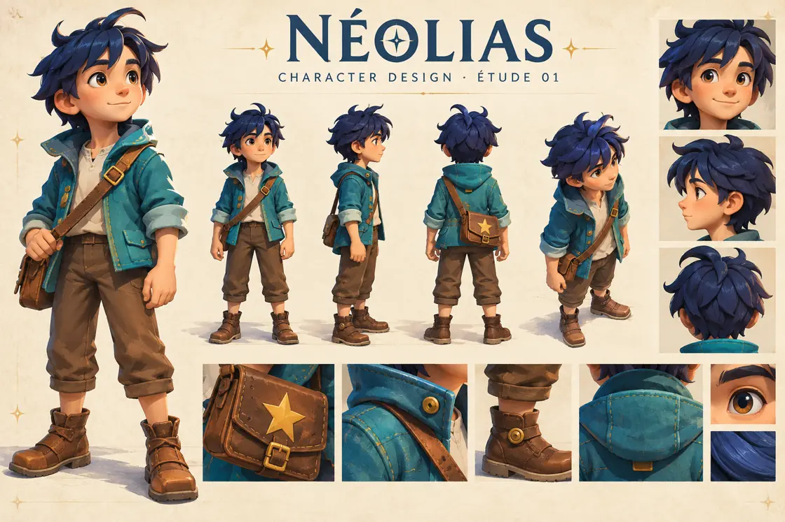
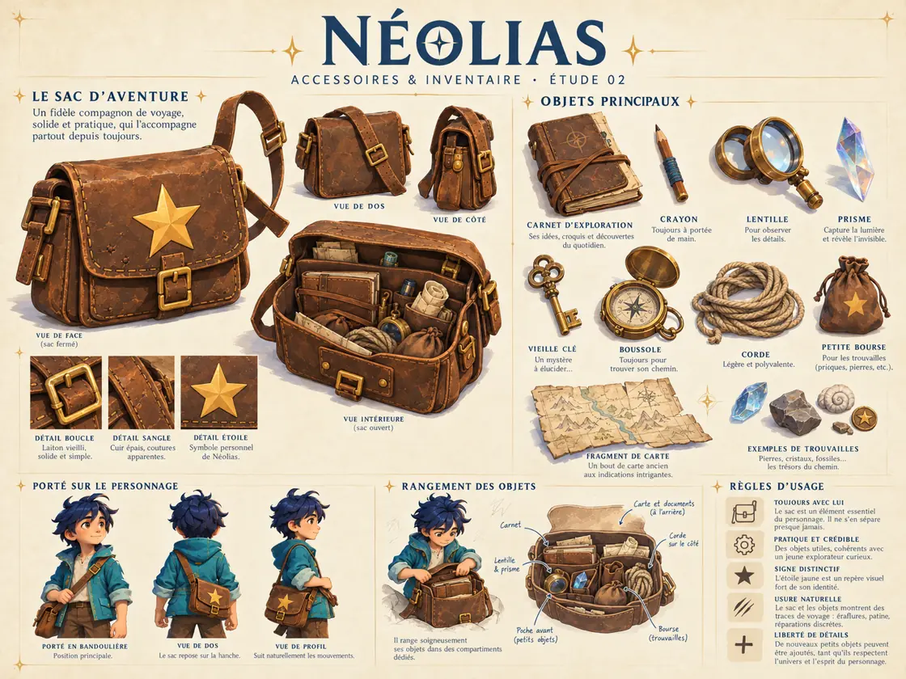
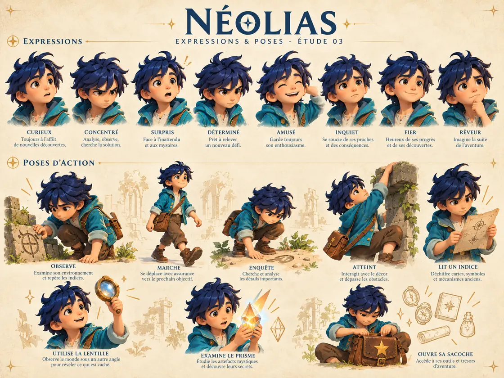
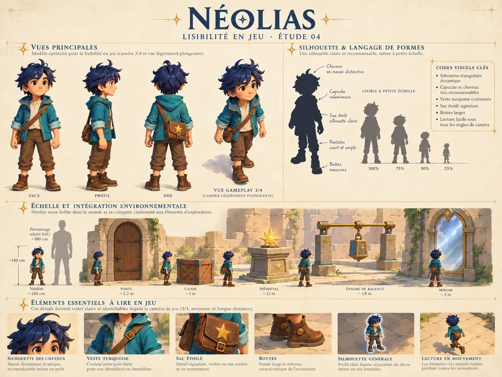
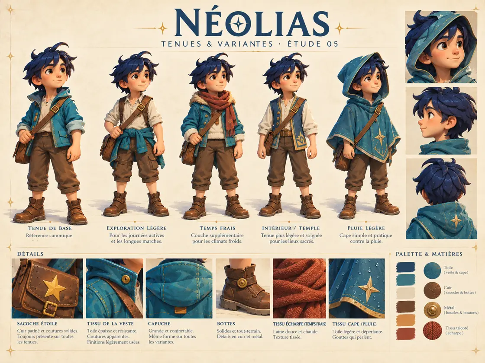
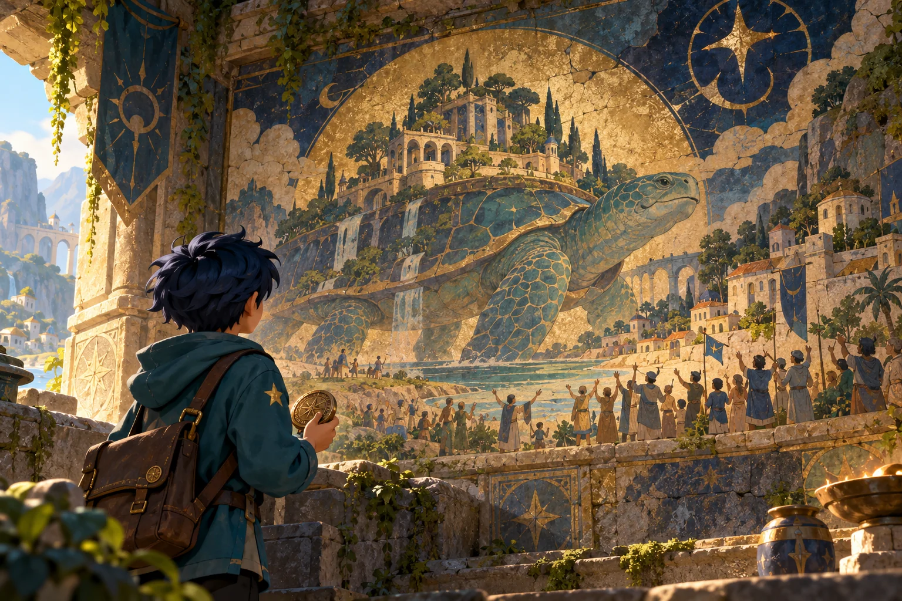
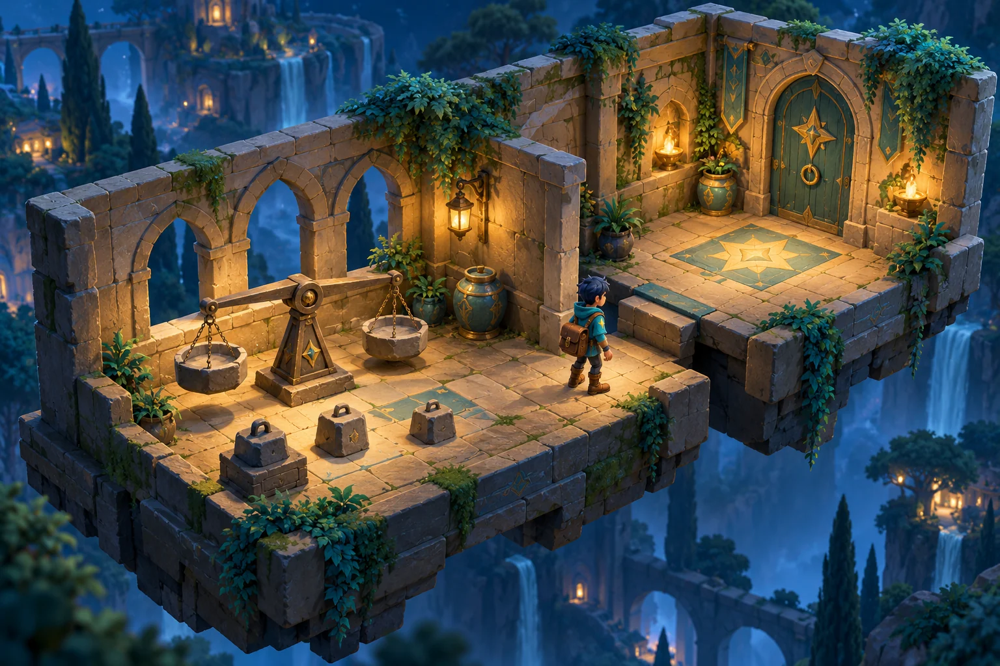
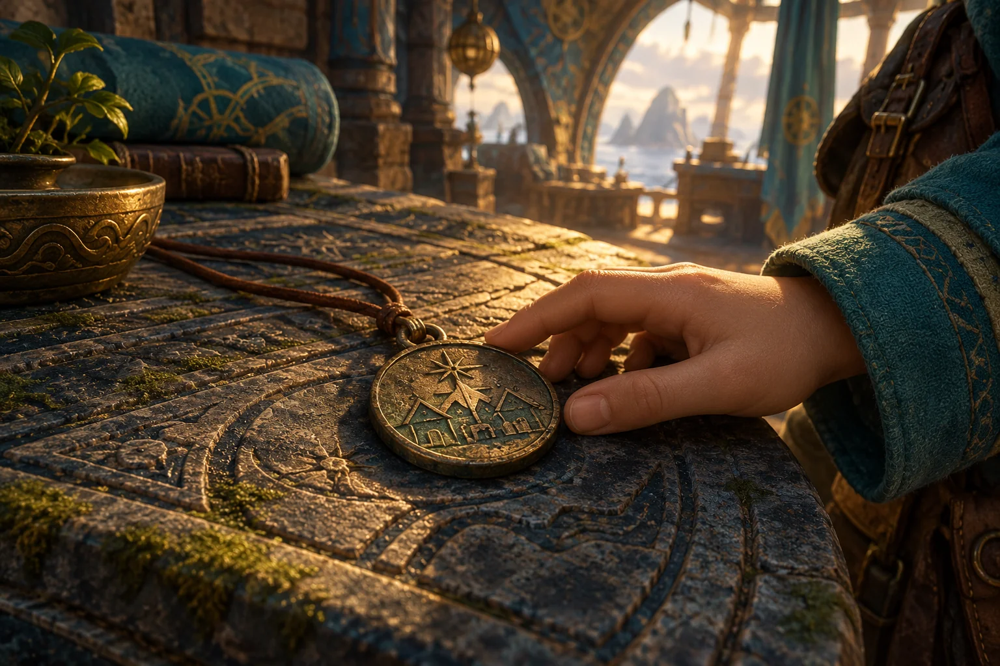

Ce qui est décidé
Solo sur ordinateur, vraie scène 3D, caméra fixe en diagonale, aucun combat ni pouvoir magique. Espace franchit un rebord prévu sans risque de chute ; E agit sur l’élément proche et visible.
Les cinq planches de recherche graphique, directement affichées sur le site. Cliquez sur une image pour l’agrandir.





Direction artistique de travail : les détails secondaires et les variantes restent à valider. Voir les notes de la bible visuelle →
Sur le dos d’une tortue géante, Néolias découvre un temple, un médaillon et un secret vieux de mille ans. Une aventure en 3D où observer, explorer et résoudre des énigmes fait avancer l’histoire.
32 réponses consolidées · Questionnaire terminé · Prototype cadré.
Votre cadre est fixé. Les choix de réalisation ci-dessous proposent un test concret dans le périmètre demandé. Ils seront évalués en jouant ; aucune nouvelle réponse n’est nécessaire.
Solo sur ordinateur, vraie scène 3D, caméra fixe en diagonale, aucun combat ni pouvoir magique. Espace franchit un rebord prévu sans risque de chute ; E agit sur l’élément proche et visible.
Deux pièces adjacentes sur un étage : balance, puis miroirs. Une lentille à ramasser, un rebord à franchir et un personnage d’ambiance au maximum. Jeu direct, sans menu ni longue introduction.
Le sac fournit automatiquement l’objet nécessaire. Le joueur règle lui-même les mécanismes : choisir un levier, orienter un miroir. Les poids captifs de la balance restent dans la salle.
Un objet oublié nécessaire se trouve toujours dans la salle juste avant. Les portes résolues restent ouvertes. Ni perte d’objet indispensable, ni impasse définitive, ni limite de temps.
Implantation de référence : sur une grille où le nord diminue la deuxième coordonnée, source (1,3), miroir 1 (4,3), miroir 2 (4,1), récepteur (7,1). Chaque miroir alterne entre / et \. Deux orientations / conduisent le rayon est → nord → est. Ce schéma est destiné à la réalisation, pas à être affiché comme aide.
Observation possible du personnage : « Ces poids sont reliés aux leviers. » Il indique un détail utile, sans donner la somme ni la manipulation à effectuer. Parler est facultatif et aucun dialogue ne verrouille une porte.
Retenu : temple sur une tortue géante ; médaillon portant l’emblème du village ; retour tous les mille ans auprès des descendants de ses anciens compagnons. Le village a oublié la promesse, la tortue non. Une dernière énigme permet de sortir.
Raccord proposé : une gravure du temple représente le médaillon ; les archéologues bien intentionnés en demandent la recherche. L’accès se replie lorsque la tortue reprend sa route. La sortie finale donne sur une passerelle lors d’une halte sûre, sans attente chronométrée. Ces détails sont des propositions d’écriture, sans nouvelle mécanique obligatoire.
La fantasy autorise une tortue millénaire et des statues ou squelettes qui parlent. L’interdiction des pouvoirs concerne Néolias et ses actions ; elle n’interdit pas ce monde fantastique.
Validation du brief : oui, pour le prototype. La jouabilité et le plaisir des énigmes restent à vérifier par les essais. Direction artistique finale, scénario détaillé, musiques définitives et salles supplémentaires pourront attendre. Aucun développement ni transfert du jeu n’est effectué par cette vérification.
Les derniers choix d’Adrien et Nicolas définissent la suite. Les réglages proposés pour le prototype et les idées futures sont explicitement signalés.
Un jeune explorateur curieux, collectionneur de petits trésors. Son village et son passé font partie de son identité.
Un parchemin découvert dans les Ruines interdites conduit à trois masques : jungle, montagnes enneigées, monde volcanique. Des Gardiens les protègent. Le masque de la jungle donne le grappin.
Éléments du document maître du premier épisode.Selon votre choix pour cette suite, Néolias a rendu les masques aux gardiens et est rentré au village. Quelques années passent. Il repart sans les anciens pouvoirs.
Continuité choisie dans vos échanges ; la fin n’est pas établie dans les sections consultées du document maître.Dans le premier épisode, réunir les masques pouvait réveiller une créature immense et dangereuse. Le document laissait encore ouverts plusieurs détails. Ils ne deviennent pas automatiquement des faits de la suite.
Une suite autonome, compréhensible sans jouer au premier. Des clins d’œil possibles et davantage d’histoire sur l’univers.
Une aventure solo en 3D, centrée sur l’exploration et les énigmes, sans combat. Caméra automatique et commandes simples. Le tout premier prototype est réduit à un étage avec une ou deux pièces, directement jouable.
Pas de compte à rebours pour s’échapper. L’intelligence doit primer sur les gestes techniques difficiles. Le combat et la défaite sont exclus. Les personnages peuvent signaler un détail utile : ils orientent la recherche sans donner la solution (9D). Les essais sont illimités et la difficulté progresse.
Aucun pouvoir magique, au départ comme pendant toute l’aventure. Observer, comprendre et régler des mécanismes : les énigmes reposent sur l’intelligence. Les combinaisons dans le sac restent une idée pour plus tard. Les commandes restent simples.


Un temple sur le dos d’une tortue géante. Néolias ne possède et n’acquiert aucun pouvoir magique.
Des archéologues du village appellent Néolias pour déchiffrer les gravures d’un temple. Pendant son exploration, le paysage derrière les fenêtres se met à bouger : le temple repose sur une tortue géante qui reprend sa route. La passerelle d’accès s’est repliée. Néolias doit comprendre les mécanismes du temple pour retrouver la terre ferme… et découvrir pourquoi ce sanctuaire voyage.
Choix 1A, 10D et 11D modifié : Néolias cherche un médaillon portant l’emblème de son village. Il découvre que la tortue revient tous les mille ans retrouver les descendants de ses anciens compagnons. Le village a oublié la promesse ; elle, non.
Néolias résout une dernière énigme et sort du temple pour retrouver la terre ferme. Le mécanisme précis reste à concevoir. Aucun combat, aucune urgence chronométrée et aucune possibilité de mourir.
Le parchemin qui mène à un danger ancien existe déjà dans Neolias 1. La révélation retenue pour ce deuxième épisode est différente : le rendez-vous oublié de la tortue, tous les mille ans. Le décor, le médaillon et cette révélation sont choisis ; les détails du début proposé restent à écrire.
Décidé : temple sur une tortue géante, sans pouvoirs magiques. Bloc 1 répondu : 1A, recherche d’un objet et découverte d’un secret plus grand ; 2A, dernière énigme puis sortie. Bloc 2 répondu : énigmes variées, inventaire et équipement automatiques, retour possible pour chercher un objet oublié. Bloc 3 répondu : 5B, objet oublié toujours dans la salle juste avant ; 6B, caméra fixe en diagonale depuis le haut. Bloc 4 répondu : saut contextuel sûr (7D), personnages d’ambiance avec histoire, humour et parfois de petits indices. Bloc 5 répondu : 9D, une observation sur un détail utile, puis le joueur cherche. Bloc 6 répondu : 10D, le médaillon portant l’emblème du village. Bloc 7 répondu : 11D modifié, le rendez-vous oublié tous les mille ans.
Le cadre est suffisamment défini pour concevoir et tester le premier prototype. Aucune question supplémentaire n’est nécessaire avant ce test. Les détails encore ouverts seront précisés en concevant les salles et en jouant ; les propositions non retenues restent identifiées comme telles.
Relire la révélation choisie ↓Choix 6B : caméra fixe par salle, en diagonale et légèrement depuis le haut. Les murs gênants s’effacent. Aucun contrôle manuel : on doit voir clairement Néolias, les objets, les passages et les mécanismes.
Les objets ramassés rejoignent automatiquement le sac et deviennent disponibles ou équipés. E utilise l’objet adapté si on le possède. Si un objet oublié bloque la progression, il se trouve toujours dans la salle immédiatement précédente. Les portes résolues restent ouvertes.
Inventaire automatique : aucune sélection manuelle d’objet. Les équipements passifs agissent dès leur acquisition. Pour le test, des icônes affichent les objets possédés, sans menu de sélection. Les bottes de feu sont un exemple, pas un objet validé.
Dernière consigne : un test très court, sans menu ni introduction narrative, pour voir le jeu et essayer quelques interactions. Cette étape remplace le premier périmètre de trois salles. L’aventure complète vise ensuite 10 à 20 minutes ; son nombre d’étages reste à choisir.
Votre choix : faire revenir Malo le marchand. Les explications et les nouveaux personnages ci-dessous sont des propositions.
Il a accompagné l’expédition avec ses provisions. Il se retrouve dans le vestibule lorsque l’accès se replie. Il raconte son voyage et commente un détail du décor. Aucun échange obligatoire ni boutique n’est prévu pour le premier test.
Proposition de présence : un compagnon de l’expédition, sans accès secret qui permettrait de sortir à tout moment.Un squelette sympathique qui range encore les objets du temple… depuis plusieurs siècles. Il cherche un contrepoids égaré et raconte des anecdotes amusantes sur le temple. Son rôle exact reste à choisir ; les personnages peuvent désormais donner occasionnellement un petit indice.
Nouveau personnage proposé : un ancien habitant du lieu, pas un visiteur inexplicablement coincé.Une petite gardienne de pierre qui s’éveille dans la lumière. Elle fait partie du temple et ne peut quitter son socle. Elle peut commenter un détail visible quand Néolias lui parle ; son dialogue ne conditionne pas l’ouverture d’une porte.
Nouveau personnage proposé : histoire et humour, sans intervention obligatoire dans la résolution.Proposition à réévaluer avec le prototype réduit : Malo et, au maximum, un nouveau personnage. Leur présence dans le premier test n’est pas encore décidée.
Proposition de réalisation : tester la balance puis la lumière dans deux pièces adjacentes. Le troisième puzzle reste pour plus tard. Aucun combat ni limite de temps ; chaque information indispensable est visible, même sans son.
Ces schémas montrent les solutions pour notre travail de conception. Ils ne valident pas les énigmes et ne sont pas des aides destinées aux joueurs.
Une balance porte une cible fixe de 4 unités à gauche. Trois poids captifs de 1, 2 et 3 unités sont attachés à des bras mécaniques. Chacun a son levier : E active ou retire uniquement le poids ciblé. Ces pièces restent sur le mécanisme et n’entrent pas dans le sac.
Solution : 1 + 3 = 4. La porte s’ouvre définitivement. Une lentille se trouve sur un rebord accessible dès l’entrée avec Espace, puis se ramasse avec E : elle ne rejoint pas automatiquement le sac à la résolution. On peut l’oublier et revenir la chercher depuis la salle 2. Les trois leviers restent librement modifiables, même après ouverture.
Mathématiques visuelles + exploration. La lentille sera nécessaire dans la salle suivante.Un faisceau diffus part vers l’est. E sur le support installe automatiquement la lentille si elle est dans le sac ; elle concentre le faisceau. Sans elle, le support reste vide et les miroirs sont tout de même manipulables. Deux miroirs sur supports fixes permettent de guider le rayon jusqu’au récepteur.
Solution : installer la lentille, diriger le rayon vers le nord avec le premier miroir, puis vers l’est avec le second. E sur un miroir alterne entre ses deux orientations diagonales. Le rayon et le récepteur réagissent visiblement ; posséder la lentille ne règle pas les miroirs.
La dernière porte ouvre la sortie du prototype. La version complète pourra ensuite proposer le prisme ; il ne fait pas partie de ce premier test.La sortie exige deux récepteurs allumés simultanément. Le faisceau entrant arrive sur un emplacement central. Deux miroirs latéraux sont déjà présents ; aucun ennemi ni chronomètre.
Solution : placer le prisme pour diviser le rayon vers l’est et l’ouest ; orienter chaque miroir latéral vers le nord, où se trouvent les deux récepteurs. Les sceaux s’allument et la sortie s’ouvre.
Deuxième puzzle lumineux : réutiliser ce qui a été appris et l’objet gagné dans la salle précédente.Décidé : les portes résolues restent ouvertes pour permettre le retour vers la salle immédiatement précédente. Conséquence nécessaire de l’absence d’impasse : aucun objet indispensable ne peut être détruit ou consommé lors d’un mauvais essai. Les mécanismes sont réversibles ; les remettre à zéro conserve le sac et les portes ouvertes.
Autres idées pour plus tard : retrouver un symbole visible depuis le bon angle ; remettre des dalles dans l’ordre indiqué par une fresque ; combiner une poignée et une tige pour actionner un levier hors de portée.
Pas de mort, de défaite, de cœurs, d’énergie ni de points. Une mauvaise configuration laisse le passage fermé. Le joueur peut déplacer, reprendre et essayer autant de fois qu’il le souhaite.
Squelettes, anciennes statues et momies bizarres apportent de l’histoire, de l’humour et parfois de petits indices. Cette nouvelle décision remplace l’interdiction absolue des indices. Choix 9D : ils attirent l’attention sur un détail utile, puis le joueur cherche. Ils ne donnent ni procédure ni solution complète.
Sauvegarde automatique des progrès et des objets dans le navigateur. L’aventure vise 10 à 20 minutes en une session, mais pourra être reprise. Pour le prototype, enregistrer les interactions terminées, les leviers, les miroirs, les objets et les portes. Reprendre dans la salle courante sur un emplacement sûr, jamais au milieu d’un saut.
Les énigmes sont les mêmes pour tous : aucun sélecteur de difficulté. Leur complexité augmente au fil de la progression. Tester différentes configurations reste une manière valable de trouver la solution.
Conséquence des règles retenues : rendre les manipulations réversibles, garder accessible la salle précédente et ne jamais consommer un objet indispensable lors d’un essai incorrect. Le blocage vient de l’énigme à comprendre, pas d’une sauvegarde devenue impossible à terminer.
Première énigme : balance à trois leviers proposée pour le test. Son intérêt sera évalué en jouant. Les solutions écrites dans ce brief servent à la conception ; elles ne seront pas des aides affichées dans le jeu.

Un prototype très court, directement jouable, sans menu ni introduction narrative. Il reprend quelques idées du brief pour voir et essayer l’expérience. Le périmètre initial de trois salles est réduit.
Une partie conçue pour se terminer en une session, avec sauvegarde dans le navigateur. Pour la suite : une énigme par pièce et une pièce par étage sont envisagées. Dix étages restent un exemple.
Mêmes habits et même visage pour Néolias, avec sa veste turquoise, sa sacoche et son étoile. Un style propre, sans viser les graphismes de Zelda. Plusieurs rendus 3D restent à proposer et à choisir.
Le mystère domine. Des musiques variées selon les pièces ou étages, des jingles pour les découvertes et les réussites, et des bruitages. Une chanson avec paroles reste une idée non tranchée.
Ordinateur uniquement pour le moment. Les manettes sont reportées et la Switch n’entre pas dans cette première étape. Aucun réglage de difficulté : les mêmes énigmes pour tous.
Les réglages de confort et la liste des idées futures ne sont pas prioritaires. Adrien et Nicolas évalueront le prototype en jouant. Aucun questionnaire supplémentaire n’est nécessaire pour préparer le prototype. La validation actuelle porte sur le brief ; le jeu n’est pas développé par cette vérification.
Le prototype sert à tester un étage et une ou deux pièces. La durée de 10 à 20 minutes concerne l’aventure visée ensuite. La progression par étages reste à préciser. Le lieu est désormais choisi : un temple sur une tortue géante.
Néolias et les Masques Perdus — Document maître
Le document mêle décisions, propositions et questions anciennes. Il sert à préserver l’identité et la continuité ; il n’impose ni la 2D, ni le chronomètre, ni le périmètre du premier jeu à Neolias 2.
Néolias, son village et son passé. Une aventure autonome qui dévoile davantage l’univers.
Explorer et comprendre. Des énigmes, des objets et un inventaire. Un seul joueur, aucun combat.
S’échapper, sans compte à rebours. Comprendre et manipuler, sans aucun pouvoir magique.
Archive de la discussion. Les décisions actuelles et la fiche du prototype font référence ; les anciennes alternatives ne sont pas à redécider.
Vos réponses : 1A et 2A. Rechercher un objet, découvrir un secret plus grand, puis résoudre une dernière énigme pour sortir. Les autres options ci-dessous restent visibles comme historique, sans être retenues.
Deux questions pour ce bloc. A rappelle votre choix ou votre piste actuelle ; B, C et D proposent des alternatives ; E apporte une idée insolite. Vous pouvez mélanger les idées ou proposer les vôtres.
Début proposé, non validé : Des archéologues du village appellent Néolias pour déchiffrer les gravures d’un temple. Pendant son exploration, le paysage derrière les fenêtres se met à bouger : le temple repose sur une tortue géante qui reprend sa route. La passerelle d’accès s’est repliée. Néolias doit comprendre les mécanismes du temple pour retrouver la terre ferme… et découvrir pourquoi ce sanctuaire voyage.
Le décor est original ; donnons maintenant une raison à ce temple de voyager.
Sortir est votre objectif ; choisissons une conclusion qui utilise vraiment la tortue et le temple.
Bloc répondu : 1A et 2A. L’objet a depuis été choisi : un médaillon portant l’emblème du village (10D). Le secret a depuis été choisi : le rendez-vous oublié tous les mille ans (11D modifié). Le mécanisme final reste à concevoir.
Bloc répondu : un mélange d’énigmes, notamment poids et lumière. Les objets rejoignent automatiquement le sac et deviennent disponibles ou équipés ; E utilise l’objet approprié. Sans cet objet, le mécanisme ne fonctionne pas. On peut revenir dans une salle précédente pour récupérer un objet oublié. Les options ci-dessous sont conservées comme historique.
Le temple sur une tortue géante, l’absence de pouvoirs et de combat, la mission de recherche et la sortie par une dernière énigme sont retenus. Les propositions suivantes restent à choisir.
Une seule idée pour tester si les manipulations sont plaisantes, avant de concevoir les autres salles.
Un inventaire peut enrichir les énigmes, mais trop de menus rendrait les commandes pénibles.
Décisions enregistrées. Le premier puzzle reste à concevoir. L’utilisation automatique des objets ne résout pas les énigmes à la place du joueur : les positions, orientations, quantités ou chemins restent à comprendre et à manipuler.
Vos réponses : 5B et 6B. Un objet oublié nécessaire à la progression se trouve toujours dans la salle juste avant. Caméra fixe en diagonale depuis le haut, comme une maquette, avec effacement des murs gênants. Les options ci-dessous restent visibles comme historique.
Les réponses B sont retenues pour les deux questions. Aucun retour sur plusieurs salles pour trouver un objet oublié. Les autres alternatives n’ont pas été choisies.
Le retour est retenu. Il reste à choisir la longueur et l’organisation de ces trajets.
Vous avez choisi une caméra sans manipulation manuelle. Son cadrage doit permettre de comprendre les salles et de retrouver les objets.
Bloc répondu : 5B et 6B. La règle du retour limité à la salle immédiatement précédente devra aussi être respectée lors de l’ajout de nouvelles salles.
Bloc répondu : 7D, Espace franchit un rebord prévu sans risque de rater. Pour les personnages, la description donnée est retenue : histoire du temple, humour, petits indices occasionnels ; squelettes, statues et momies. Leur participation aux mécanismes n’est pas décidée. Les options ci-dessous sont conservées comme historique.
La caméra fixe et les retours courts sont choisis. Ce bloc précise ce que le joueur fait entre les manipulations d’énigmes. Les choix actuels sont indiqués dans le résumé ci-dessus ; les autres alternatives restent un historique.
Avec cette caméra, les distances peuvent être difficiles à juger. Le saut doit rester compatible avec des énigmes sans difficulté de plateforme.
Malo reste prévu et vous souhaitez de nouvelles rencontres. Les petits indices occasionnels sont autorisés et précisés au bloc 5 : une observation sur un détail utile (9D), sans révéler la solution.
Choix enregistrés : saut contextuel sûr et personnages principalement dédiés à l’histoire et à l’humour, avec parfois un petit indice. Les rencontres exactes du prototype restent à choisir.
Votre réponse : 9D. Un personnage attire l’attention sur un détail utile à l’énigme. Le joueur sait dans quelle direction partir, puis trouve lui-même comment résoudre le problème. Les autres options ci-dessous sont conservées comme historique.
La forme des indices occasionnels est choisie : une simple observation (D). Elle remplace le choix initial « aucun indice » ; les autres options ne sont pas retenues.
Votre nouvelle réponse fait évoluer la règle « aucun indice ». Choisissons une forme qui laisse le plaisir de chercher.
Bloc répondu : 9D. L’observation indique une direction de recherche ; elle ne fournit ni manipulation à effectuer ni solution complète.

Votre réponse : 10D. Néolias vient chercher un médaillon portant l’emblème du village. Le lien a depuis été précisé : le rendez-vous oublié de la tortue, tous les mille ans. Les autres options ci-dessous sont conservées comme historique.
L’objet de la mission est choisi : le médaillon portant l’emblème du village. La révélation est désormais choisie : un rendez-vous oublié tous les mille ans. Les autres objets proposés n’ont pas été retenus.
Vous avez choisi une recherche d’objet qui révèle un secret plus grand. La réponse D, le médaillon du village, est désormais retenue.
Bloc répondu : 10D. Le médaillon conduit à la découverte du rendez-vous oublié, désormais retenu au bloc 7.
Votre réponse : 11D, avec mille ans au lieu de cent. La tortue revient retrouver les descendants de ses anciens compagnons. Le village a oublié cette promesse ; elle, non. Le questionnaire est terminé pour le prototype.
Le médaillon du village et la révélation sont choisis. La réponse D ci-dessous est corrigée à mille ans ; les autres histoires sont conservées comme alternatives non retenues.
Le secret doit relier le village de Néolias à ce temple voyageur. Toutes les propositions conservent la fin choisie : résoudre une dernière énigme puis sortir.
Bloc répondu : 11D modifié à mille ans. La découverte pourra se faire par le décor, le médaillon et les anecdotes des personnages. La fin reste une dernière énigme suivie de la sortie. Aucune nouvelle question n’est requise avant le prototype.
Les textes ci-dessous reformulent votre discussion. Chaque réponse reste modifiable. Les choix explicites sont validés ; les réponses comportant encore des arbitrages restent à discuter.